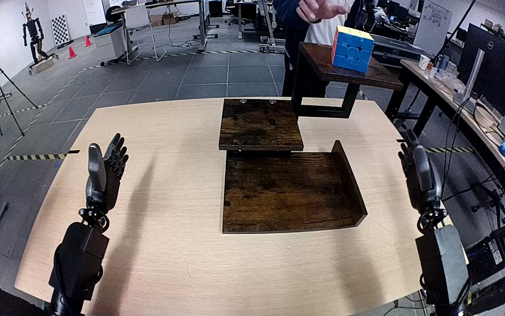

NVIDIA GR1 · 2
Video 2

Annotation
From the dedicated visual review of this video (humanoid_action_v1). Plain text · JSON
Observed outcome
Cube is on the lowest wooden shelf with green face upward; right fingers are opening beside it, with thumb and palm still nearby. Complete hand withdrawal is outside the clip.
Hand roles
- Right
Only manipulator: reaches to top shelf, grasps cube, lifts, transports downward, lowers onto lowest shelf and begins opening fingers.
- Left
Remains open near initial position throughout; no object contact or stabilization.
- Person
Turns the cube in place during initial frames and withdraws before robot grasp; no person-to-robot handoff.
- Coordination
Single-hand robot manipulation; left hand provides no support, and the person ceases touching the cube before the robot grasp.
Robot-side evidence
- Camera convention
Forward view from the robot's perspective; the near forearms enter from the lower left and lower right rather than belonging to a robot facing the camera.
- Right hand
Active arm enters from the robot's right/lower-right edge; its thumb is on the inner/left side and fingers curl from the outer/right side around the cube, consistent with anatomical right hand.
- Left hand
Inactive near arm enters from lower left with thumb toward the inner/right side, supporting the forward-view convention.
- Confidence
high; robot torso is out of frame, but arm origins, forward viewpoint and opposing thumb positions establish the convention.
Chronology
| Frames | Observation |
|---|---|
| 0–10 | Person touches and turns the cube on the highest shelf, changing the visible front face from blue to yellow; the cube remains on that shelf. Both robot hands start open. |
| 12–26 | Person withdraws their hand. Right robot arm rises toward the cube; left robot arm remains near its initial open-hand position. |
| 28–58 | Right hand reaches across the upper shelf and closes its thumb and fingers around opposite sides of the cube; the cube tilts as grasp is established. |
| 60–74 | Right hand lifts cube visibly clear of the upper wooden surface, initially upward and toward the robot's right. |
| 76–102 | Right arm transports cube downward to the lowest tray-like wooden shelf and lowers it to the shelf surface. |
| 104–119 | Cube settles on the bottom shelf. Right fingers begin opening at the end, with the upper fingers rising away from the cube; hand and thumb remain immediately beside the cube as the clip ends. No complete arm withdrawal is shown. |
Differences from the publisher annotation
- Original instruction correctly identifies right hand and top-to-bottom cube relocation, but omits the person turning the cube before robot contact and the visible terminal finger opening without full hand withdrawal.
Uncertainties
- Final cube-to-shelf contact is partly obscured by the right hand; lowering, settled position and finger opening support set-down, but complete clearance of all hand contact is not visible.
- Exact initial person finger contact and exact robot grasp closure frame are only resolved to the sampled two-frame intervals.
Complete review record action_review.json
{
"prompt_protocol": "humanoid_action_v1",
"prompt_provenance": "visually_authored_from_video_and_initial_frame",
"reviewed_contact_sheets": [
"sheet_001.jpg"
],
"inspected_frame_stride": 2,
"inspected_sampled_frame_count": 60,
"initial_scene": "Robot-mounted forward view with both robot forearms entering from the lower corners. A multicolored Rubik's cube rests on the highest wooden shelf, a person stands behind it, and the lowest wooden tray-like shelf is empty.",
"observed_sequence": [
{
"start_frame": 0,
"end_frame": 10,
"observation": "Person touches and turns the cube on the highest shelf, changing the visible front face from blue to yellow; the cube remains on that shelf. Both robot hands start open."
},
{
"start_frame": 12,
"end_frame": 26,
"observation": "Person withdraws their hand. Right robot arm rises toward the cube; left robot arm remains near its initial open-hand position."
},
{
"start_frame": 28,
"end_frame": 58,
"observation": "Right hand reaches across the upper shelf and closes its thumb and fingers around opposite sides of the cube; the cube tilts as grasp is established."
},
{
"start_frame": 60,
"end_frame": 74,
"observation": "Right hand lifts cube visibly clear of the upper wooden surface, initially upward and toward the robot's right."
},
{
"start_frame": 76,
"end_frame": 102,
"observation": "Right arm transports cube downward to the lowest tray-like wooden shelf and lowers it to the shelf surface."
},
{
"start_frame": 104,
"end_frame": 119,
"observation": "Cube settles on the bottom shelf. Right fingers begin opening at the end, with the upper fingers rising away from the cube; hand and thumb remain immediately beside the cube as the clip ends. No complete arm withdrawal is shown."
}
],
"anatomical_side_evidence": {
"camera_convention": "Forward view from the robot's perspective; the near forearms enter from the lower left and lower right rather than belonging to a robot facing the camera.",
"right_hand": "Active arm enters from the robot's right/lower-right edge; its thumb is on the inner/left side and fingers curl from the outer/right side around the cube, consistent with anatomical right hand.",
"left_hand": "Inactive near arm enters from lower left with thumb toward the inner/right side, supporting the forward-view convention.",
"confidence": "high; robot torso is out of frame, but arm origins, forward viewpoint and opposing thumb positions establish the convention."
},
"arm_hand_roles": {
"right": "Only manipulator: reaches to top shelf, grasps cube, lifts, transports downward, lowers onto lowest shelf and begins opening fingers.",
"left": "Remains open near initial position throughout; no object contact or stabilization.",
"person": "Turns the cube in place during initial frames and withdraws before robot grasp; no person-to-robot handoff.",
"coordination": "Single-hand robot manipulation; left hand provides no support, and the person ceases touching the cube before the robot grasp."
},
"terminal_state": "Cube is on the lowest wooden shelf with green face upward; right fingers are opening beside it, with thumb and palm still nearby. Complete hand withdrawal is outside the clip.",
"selected_execution_status": "placement_observed_finger_opening_observed_no_complete_withdrawal",
"uncertainties": [
"Final cube-to-shelf contact is partly obscured by the right hand; lowering, settled position and finger opening support set-down, but complete clearance of all hand contact is not visible.",
"Exact initial person finger contact and exact robot grasp closure frame are only resolved to the sampled two-frame intervals."
],
"annotation_discrepancies": [
"Original instruction correctly identifies right hand and top-to-bottom cube relocation, but omits the person turning the cube before robot contact and the visible terminal finger opening without full hand withdrawal."
],
"evidence_frame_indices": [
0,
8,
44,
60,
70,
88,
102,
112,
116,
119
],
"inspection_coverage": {
"entire_source_sequence": true,
"source_frame_range": [
0,
119
],
"sampled_frames": "0, 2, 4, ... 118",
"contact_sheet_count": 1,
"native_transition_frames": [
0,
8,
44,
60,
70,
88,
102,
112,
116,
119
],
"source_initial_png_inspected_at_native_resolution": true,
"native_dimensions": [
1280,
800
]
},
"reference_scope": "Complete 120-frame original single-task clip; no crop, trim, split, resize or re-encode.",
"video_id": "2",
"dataset": "NVIDIA_GR1_100",
"review_source_video": "NVIDIA_GR1_100/2/original/original.mp4",
"source_frame_count": 120,
"source_fps": 20.0,
"native_detail_frames": [
0,
8,
44,
60,
70,
88,
102,
112,
116,
119
],
"world_model_prompt": "After the person turns the Rubik's cube on the top shelf and removes their hand, the robot grasps the cube with its right hand and lifts it clear. It carries the cube down to the bottom shelf, sets it onto the wooden surface, and opens its fingers while keeping the hand beside the cube. Keep the camera fixed; preserve robot geometry, physically valid joint motion, and normal gripper opening and closing.",
"original_task_instruction": "Use the right hand to pick up rubik's cube from top level of the shelf to bottom level of the shelf.",
"selected_segment": {
"start_frame": 0,
"end_frame_exclusive": 120,
"reason": "Complete original single-task reference; no cropping or trimming requested."
},
"source_video_sha256": "689f5a3ea1bbc2773a4009aa2ade721d26a4bd12c4b74278385fa2b9daae55ee",
"review_completed_at": "2026-10-13T16:47:10.959757+00:00",
"dedicated_review_agent": "review_gr1_2"
}